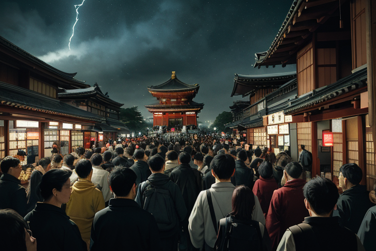
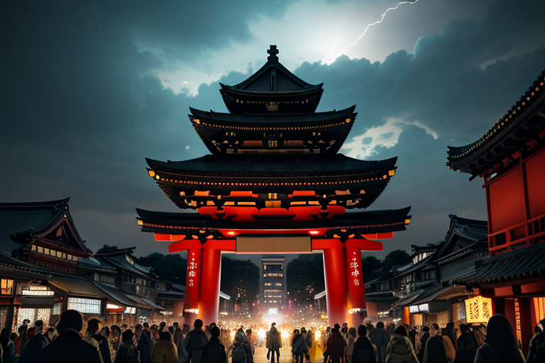
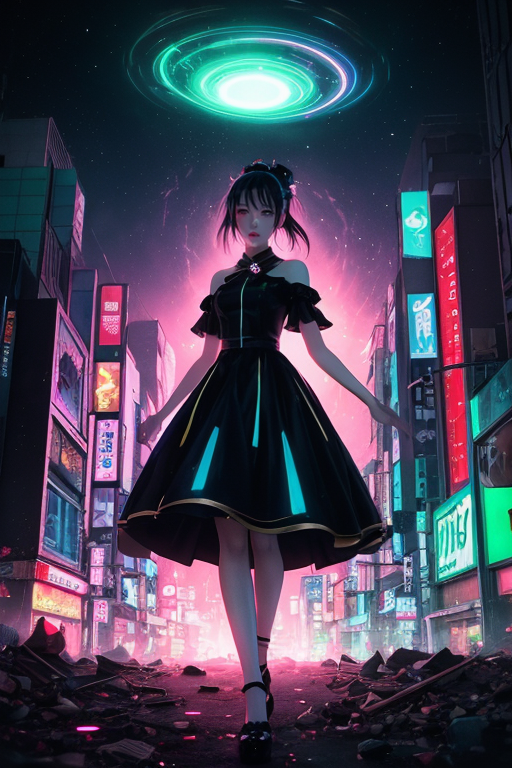
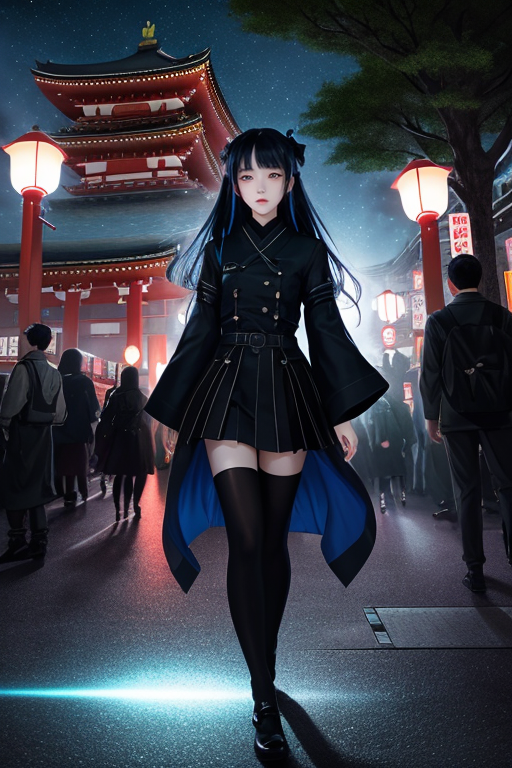

第一章 現実の東京
あなたはまだ気づいていない。この土地にも、王がいることを。
浅草寺の雷門をくぐる人波は、一秒の休みもなく流れ続ける。その奥、本堂の前で手を合わせる人々の願いは、切実で、刹那的で、膨大だ。この土地は、二度の壊滅を経験した。関東大震災の炎、東京大空襲の焼夷弾。灰燼から、より速く、より高く立ち上がることを宿命づけられた街。その復興のスピードは、祈りすらも消費していくかのようだ。
明治神宮の森は、都会の騒音を吸い込む深い緑のダムだが、その地下では、膨大な「焦燥」の感情が、プレートの歪みのように蓄積されていた。満員電車の密閉された空間、スクランブル交差点を横断する無数の足音、ネオンの下で交わされる約束と別れ。すべてが「もっと速く」と囁き、微細なストレスとして地層に染み込む。
王は、その感情の堆積層の上に立っていた。彼の名はトキオニア・アークス。この欲望と加速の王国を、微調整するために遣わされた者だ。
第二章 歪みの兆候
浅草寺の雷門をくぐる人波は、秒単位で入れ替わる。トキオニア・アークスは仲見世の喧騒の中に立ち、掌で感じる。ここには、二つの大きな歴史の「断層」が残っている。一九二三年の関東大震災の激震。一九四五年の東京大空襲の業火。災害そのものは彼にも消せない。しかし、その衝撃が生んだ「焦燥」――復興せねば、追いつかねば、という集団的な感情の波紋が、百年経った今も、この土地の時間を前のめりに加速させ続けている。
彼は目を閉じる。視界には、無数の「速さ」が走る光の帯として映る。渋谷の交差点を駆け抜ける若者の足取り。秋葉原のディスプレイを更新する信号。明治神宮の森でさえ、訪れる人々の願いの切実さが、空気の振動数を上げている。すべてが「次へ、次へ」と急ぐ。それは進化のエネルギーでもあるが、同時に、プレートに無理な負荷をかける「歪み」そのものだった。
「王、歪み係数が閾値に近づいています」
主席妖精アークレアの声が、電気的なざわめきとして脳裏に響く。
「このペースでは、微調整だけでは収まりきらない事象が発生する可能性が六十二パーセント」
トキオニアは金色の瞳を開いた。速さは進化か、消耗か。彼に与えられた問いは、今、赤く点滅する警告灯のように、東京の空気を震わせていた。

第三章 王の葛藤
浅草寺の雷門の巨大な提灯が、夕闇の中で赤く浮かび上がる。その下を、無数の人影が絶え間なく流れていく。トキオニアはその雑踏の上、見えない高みに立っていた。彼の視界には、街全体が「歪み」のベクトル場として映る。明治神宮の森から発せられる静謐な流れ、渋谷の交差点で渦巻く焦燥、秋葉原の電磁的な興奮。それら全てが、プレートに蓄積されるストレスの色合いとして重ね書きされていく。
「止めましょう」
アークレアが現実に顕現し、トキオニアの脇に立った。彼女の体は微細な稲妻のようで、常に落ち着きがない。
「この欲望と加速の奔流は、やがて必ず『歪み』として跳ね返ります。1923年も、1945年も、この街はその反動を地で受けました。微調整の限界です」
トキオニアは黙った。彼の目には、別の光景も見えていた。この速さが生み出す革新、人々の熱量、未来への希求。止めることは、進化の芽をも摘むことに等しい。彼の内側で、初めてと呼べるほどの「逡巡」という感情が、重い澱のように生まれていた。効率と安全。その狭間で、王の金色の瞳がゆっくりと輝度を増した。

第四章 妖精との対話
「王よ、あなたの逡巡は、この街の感情密度が生んだものです」
アークレアの声は、渋谷の雑踏を背景に、意外なほど静かだった。彼女は加速王の肩に、微かな電気の火花を散らしながら座る。
「私たちは調整者です。止めることも、進めることもできません。ただ…歪みを『選択』することはできます」
彼女はクロノアークを呼んだ。時間加速の妖精は、スクランブル交差点を行き交う無数の光の軌跡を指さす。
「見てください。この速度が、どれだけの『出会い』と『別れ』を生み、どれだけの『ひらめき』を加速させているか。関東大震災の瓦礫の上で、人々が選んだのも『速さ』でした。復興の速さ。それは、悲しみに沈む時間さえも削ぎ落とす、残酷で必要な選択だった」
アークレアの目が、ネオンのように赤く光った。
「消耗か、進化か。その答えは、私たちにはわかりません。でも王よ、あなたが今感じているこの『逡巡』こそが、この土地があなたに求める、新たな調整なのです。無感情な効率から、感情を内包した速度へ。それが、東京という歪みがあなたに課す、変革です」

第五章 微調整と余韻
浅草寺の雷門の巨大な提灯が、深夜の闇に揺れた。加速王トキオニア・アークスは、その下で立ち止まった。掌には、関東大震災と東京大空襲という二つの巨大な歪みの痕跡が、黒と金の紋章に刻まれていた。妖精アークレアの言葉が、彼の内側で反響する。逡巡。それは効率の敵であり、感情の証だった。
彼は目を閉じ、都市全体の「速さ」の流れを感じた。満員電車の息づかい、渋谷のスクランブル交差点を流れる無数の意志、秋葉原のネオンが刻む一秒。その全てが、消耗へと向かう加速のベクトルだった。歴史は、彼に一度だけ「曲げる」機会を与えていた。一九四五年三月十日の零時、東京の空気を歪ませる爆撃機の編隊の影。彼はこれまで、津波を数秒遅らせるように、その爆撃の経路をわずかにずらし、被害の集中を分散させる微調整を繰り返してきた。
しかし、アークレアは言った。消耗か、進化か。彼は掌をかざした。紋章が赤く輝く。彼は、歴史の流れを「止め」はしなかった。代わりに、ある一つの「偶然」を選んだ。爆撃による火災の旋風が、明治神宮の森の直前に達したその瞬間、都市の全ての「速さ」を、ほんの一呼吸、神宮の森の周囲だけから奪った。風が止み、熱が一瞬逃げる。ほんの数秒の、奇跡的な隙間。それは、森の消失を防ぐ代わりに、他の地域への加速、つまり消耗を増幅させる選択だった。
森は残った。代償は、彼の紋章に深い亀裂として刻まれた。効率を重んじた王が、非効率な「逡巡」の末に下した、感情を伴った判断。それは進化でも消耗でもなく、ただ、この土地が彼に与えた「選択する速さ」だった。ネオンの海を見下ろす東京タワーの頂で、彼はもんじや焼きの匂いが漂う路地を、静かに見守り続ける。
あなたの町にも、王がいる。